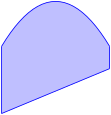
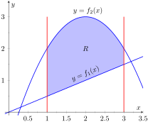
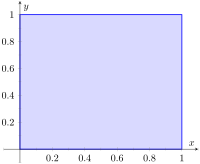
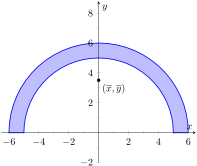

We have used iterated integrals to find areas of plane regions and signed volumes under surfaces. A brief recap of these uses will be useful in this section as we apply iterated integrals to compute the mass and center of mass of planar regions.
To find the area of a planar region, we evaluated the double integral \(\iint_R\, dA\text{.}\) That is, summing up the areas of lots of little subregions of \(R\) gave us the total area. Informally, we think of \(\iint_R\, dA\) as meaning “sum up lots of little areas over \(R\text{.}\)”
To find the signed volume under a surface, we evaluated the double integral \(\iint_R f(x,y)\, dA\text{.}\) Recall that the “\(dA\)” is not just a “bookend” at the end of an integral; rather, it is multiplied by \(f(x,y)\text{.}\) We regard \(f(x,y)\) as giving a height, and \(dA\) still giving an area: \(f(x,y)\, dA\) gives a volume. Thus, informally, \(\iint_Rf(x,y)\, dA\) means “sum up lots of little volumes over \(R\text{.}\)”
We now extend these ideas to other contexts.
Subsection14.4.1Mass and Weight
Consider a thin sheet of material with constant thickness and finite area. Mathematicians (and physicists and engineers) call such a sheet a lamina. So consider a lamina, as shown in Figure 14.4.1.(a), with the shape of some planar region \(R\text{,}\) as shown in Figure 14.4.1.(b).
(a)
(b)
Figure14.4.1.Illustrating the concept of a lamina
We can write a simple double integral that represents the mass of the lamina: \(\iint_R\, dm\text{,}\) where “\(dm\)” means “a little mass.” That is, the double integral states the total mass of the lamina can be found by “summing up lots of little masses over \(R\text{.}\)”
To evaluate this double integral, partition \(R\) into \(n\) subregions as we have done in the past. The \(i\)th subregion has area \(\Delta A_i\text{.}\) A fundamental property of mass is that “mass=density×area.” If the lamina has a constant density \(\delta\text{,}\) then the mass of this \(i\)th subregion is \(\Delta m_i=\delta\Delta A_i\text{.}\) That is, we can compute a small amount of mass by multiplying a small amount of area by the density.
If density is variable, with density function \(\delta= \delta(x,y)\text{,}\) then we can approximate the mass of the \(i\)th subregion of \(R\) by multiplying \(\Delta A_i\) by \(\delta(x_i,y_i)\text{,}\) where \((x_i,y_i)\) is a point in that subregion. That is, for a small enough subregion of \(R\text{,}\) the density across that region is almost constant.
The total mass \(M\) of the lamina is approximately the sum of approximate masses of subregions:
Taking the limit as the size of the subregions shrinks to 0 gives us the actual mass; that is, integrating \(\delta(x,y)\) over \(R\) gives the mass of the lamina.
Definition14.4.2.Mass of a Lamina with Variable Density.
Let \(\delta(x,y)\) be a continuous density function of a lamina corresponding to a closed, bounded plane region \(R\text{.}\) The mass \(M\) of the lamina is
\begin{equation*}
\text{ mass } M = \iint_R\, dm = \iint_R \delta(x,y)\, dA\text{.}
\end{equation*}
Example14.4.3.Finding the mass of a lamina with constant density.
Find the mass of a square lamina, with side length 1, with a density of \(\delta = 3\,\text{g/cm}^2\text{.}\)
We represent the lamina with a square region in the plane as shown in Figure 14.4.4. As the density is constant, it does not matter where we place the square.
Figure14.4.4.A region \(R\) representing a lamina in Example 14.4.3
\begin{equation*}
M = \iint_R 3\, dA = \int_0^1\int_0^1 3\, dx\, dy = 3\int_0^1\int_0^1 \, dx\, dy=3\,\text{g}\text{.}
\end{equation*}
This is all very straightforward; note that all we really did was find the area of the lamina and multiply it by the constant density of 3 g⁄cm2.
Example14.4.5.Finding the mass of a lamina with variable density.
Find the mass of a square lamina, represented by the unit square with lower lefthand corner at the origin (see Figure 14.4.4), with variable density \(\delta(x,y) = (x+y+2)\,\text{g/cm}^2\text{.}\)
The variable density \(\delta\text{,}\) in this example, is very uniform, giving a density of 3 in the center of the square and changing linearly. A graph of \(\delta(x,y)\) can be seen in Figure 14.4.6; notice how “same amount” of density is above \(z=3\) as below. We'll comment on the significance of this momentarily.
The mass \(M\) is found by integrating \(\delta(x,y)\) over \(R\text{.}\) The order of integration is not important; we choose \(dx\, dy\) arbitrarily. Thus:
It turns out that since the density of the lamina is so uniformly distributed “above and below” \(z=3\) that the mass of the lamina is the same as if it had a constant density of 3. The density functions in Examples 14.4.3 and Example 14.4.5 are graphed in Figure 14.4.6, which illustrates this concept.
Example14.4.7.Finding the weight of a lamina with variable density.
Find the weight of the lamina represented by the disk with radius 2 ft, centered at the origin, with density function \(\delta(x,y) = (x^2+y^2+1)\,\text{lb/ft}^2\text{.}\) Compare this to the weight of the lamina with the same shape and density \(\delta(x,y) = (2\sqrt{x^2+y^2}+1)\,\text{lb/ft}^2\text{.}\)
A direct application of Definition 14.4.2 states that the weight of the lamina is \(\iint_R\delta(x,y)\, dA\text{.}\) Since our lamina is in the shape of a circle, it makes sense to approach the double integral using polar coordinates.
The density function \(\delta(x,y) = x^2+y^2+1\) becomes
One would expect different density functions to return different weights, as we have here. The density functions were chosen, though, to be similar: each gives a density of 1 at the origin and a density of 5 at the outside edge of the circle, as seen in Figure 14.4.8.
Figure14.4.8.Graphing the density functions in Example 14.4.7. In (a) is the density function \(\delta(x,y) = x^2+y^2+1\text{;}\) in (b) is \(\delta(x,y) = 2\sqrt{x^2+y^2}+1\)
Notice how \(x^2+y^2+1 \leq 2\sqrt{x^2+y^2}+1\) over the circle; this results in less weight.
Plotting the density functions can be useful as our understanding of mass can be related to our understanding of “volume under a surface.” We interpreted \(\iint_R f(x,y)\, dA\) as giving the volume under \(f\) over \(R\text{;}\) we can understand \(\iint_R\delta(x,y)\, dA\) in the same way. The “volume” under \(\delta\) over \(R\) is actually mass; by compressing the “volume” under \(\delta\) onto the \(xy\)-plane, we get “more mass” in some areas than others — i.e., areas of greater density.
Knowing the mass of a lamina is one of several important measures. Another is the center of mass, which we discuss next.
Subsection14.4.2Center of Mass
Consider a disk of radius 1 with uniform density. It is common knowledge that the disk will balance on a point if the point is placed at the center of the disk. What if the disk does not have a uniform density? Through trial-and-error, we should still be able to find a spot on the disk at which the disk will balance on a point. This balance point is referred to as the center of mass, or center of gravity. It is though all the mass is “centered” there. In fact, if the disk has a mass of 3 kg, the disk will behave physically as though it were a point-mass of 3 kg located at its center of mass. For instance, the disk will naturally spin with an axis through its center of mass (which is why it is important to “balance” the tires of your car: if they are “out of balance”, their center of mass will be outside of the axle and it will shake terribly).
We find the center of mass based on the principle of a weighted average. Consider a college class in which your homework average is 90%, your test average is 73%, and your final exam grade is an 85%. Experience tells us that our final grade is not the average of these three grades: that is, it is not:
That is, you are probably not pulling a B in the course. Rather, your grades are weighted. Let's say the homework is worth 10% of the grade, tests are 60% and the exam is 30%. Then your final grade is:
In the grading example above, the sum of the weights 0.1, 0.6 and 0.3 is 1, so we don't see the division by the sum of weights in that instance.
How this relates to center of mass is given in the following theorem.
Theorem14.4.9.Center of Mass of Discrete Linear System.
Let point masses \(m_1,m_2,\ldots,m_n\) be distributed along the \(x\)-axis at locations \(x_1,x_2,\ldots,x_n\text{,}\) respectively. The center of mass \(\overline{x}\) of the system is located at
Example14.4.10.Finding the center of mass of a discrete linear system.
Point masses of 2 g are located at \(x=-1\text{,}\)\(x=2\) and \(x=3\) are connected by a thin rod of negligible weight. Find the center of mass of the system.
Point masses of 10 g, 2 g and 1 g are located at \(x=-1\text{,}\)\(x=2\) and \(x=3\text{,}\) respectively, are connected by a thin rod of negligible weight. Find the center of mass of the system.
Placing a large weight at the left hand side of the system moves the center of mass left, as shown in Figure 14.4.11.(b).
In a discrete system (i.e., mass is located at individual points, not along a continuum) we find the center of mass by dividing the mass into a moment of the system. In general, a moment is a weighted measure of distance from a particular point or line. In the case described by Theorem 14.4.9, we are finding a weighted measure of distances from the \(y\)-axis, so we refer to this as the moment about the \(y\)-axis, represented by \(M_y\text{.}\) Letting \(M\) be the total mass of the system, we have \(\overline{x} = M_y/M\text{.}\)
We can extend the concept of the center of mass of discrete points along a line to the center of mass of discrete points in the plane rather easily. To do so, we define some terms then give a theorem.
Definition14.4.12.Moments about the \(x\) and \(y\) Axes.
Let point masses \(m_1\text{,}\)\(m_2,\ldots,m_n\) be located at points
The moment about the \(y\)-axis, \(M_y\text{,}\) is \(\ds M_y = \sum_{i=1}^n m_ix_i\text{.}\)
The moment about the \(x\)-axis, \(M_x\text{,}\) is \(\ds M_x = \sum_{i=1}^n m_iy_i\text{.}\)
One can think that these definitions are “backwards” as \(M_y\) sums up “\(x\)” distances. But remember, “\(x\)” distances are measurements of distance from the \(y\)-axis, hence defining the moment about the \(y\)-axis.
We now define the center of mass of discrete points in the plane.
Theorem14.4.13.Center of Mass of Discrete Planar System.
Let point masses \(m_1\text{,}\)\(m_2,\ldots,m_n\) be located at points
respectively, in the \(xy\)-plane, and let \(\ds M = \sum_{i=1}^n m_i\text{.}\)
The center of mass of the system is at \((\overline{x},\overline{y})\text{,}\) where
\begin{equation*}
\overline{x}= \frac{M_y}{M} \text{ and } \overline{y} = \frac{M_x}{M}\text{.}
\end{equation*}
Example14.4.14.Finding the center of mass of a discrete planar system.
Let point masses of 1 kg, 2 kg and 5 kg be located at points \((2,0)\text{,}\)\((1,1)\) and \((3,1)\text{,}\) respectively, and are connected by thin rods of negligible weight. Find the center of mass of the system.
Figure14.4.15.Illustrating the center of mass of a discrete planar system in Example 14.4.14
Thus the center of mass is \(\ds (\overline{x},\overline{y}) = \left(\frac{M_y}{M},\frac{M_x}M\right) = \left(\frac{{19}}8,\frac78\right) =(2.375,0.875)\text{,}\) illustrated in Figure 14.4.15.
We finally arrive at our true goal of this section: finding the center of mass of a lamina with variable density. While the above measurement of center of mass is interesting, it does not directly answer more realistic situations where we need to find the center of mass of a contiguous region. However, understanding the discrete case allows us to approximate the center of mass of a planar lamina; using calculus, we can refine the approximation to an exact value.
We begin by representing a planar lamina with a region \(R\) in the \(xy\)-plane with density function \(\delta(x,y)\text{.}\) Partition \(R\) into \(n\) subdivisions, each with area \(\Delta A_i\text{.}\) As done before, we can approximate the mass of the \(i\)th subregion with \(\delta(x_i,y_i)\Delta A_i\text{,}\) where \((x_i,y_i)\) is a point inside the \(i\)th subregion. We can approximate the moment of this subregion about the \(y\)-axis with \(x_i\delta(x_i,y_i)\Delta A_i\) — that is, by multiplying the approximate mass of the region by its approximate distance from the \(y\)-axis. Similarly, we can approximate the moment about the \(x\)-axis with \(y_i\delta(x_i,y_i)\Delta A_i\text{.}\) By summing over all subregions, we have:
\begin{align*}
\text{ mass: } M \amp \approx \sum_{i=1}^n \delta(x_i,y_i)\Delta A_i \text{ (as seen before) }\\
\text{ moment about the \(x\)-axis: } M_x \amp \approx \sum_{i=1}^n y_i\delta(x_i,y_i)\Delta A_i\\
\text{ moment about the \(y\)-axis: } M_y \amp \approx \sum_{i=1}^n x_i\delta(x_i,y_i)\Delta A_i
\end{align*}
By taking limits, where size of each subregion shrinks to 0 in both the \(x\) and \(y\) directions, we arrive at the double integrals given in the following theorem.
Theorem14.4.16.Center of Mass of a Planar Lamina, Moments.
Let a planar lamina be represented by a closed, bounded region \(R\) in the \(xy\)-plane with density function \(\delta(x,y)\text{.}\)
\(\displaystyle \ds \text{ mass: } M = \iint_R\delta(x,y)\, dA\)
\(\displaystyle \ds \text{ moment about the \(x\)-axis: } M_x = \iint_Ry\delta(x,y)\, dA\)
\(\displaystyle \ds \text{ moment about the \(y\)-axis: } M_y = \iint_Rx\delta(x,y)\, dA\)
We start our practice of finding centers of mass by revisiting some of the lamina used previously in this section when finding mass. We will just set up the integrals needed to compute \(M\text{,}\)\(M_x\) and \(M_y\) and leave the details of the integration to the reader.
Example14.4.17.Finding the center of mass of a lamina.
Find the center mass of a square lamina, with side length 1, with a density of \(\delta = 3\,\text{g/cm}^2\text{.}\) (Note: this is the lamina from Example 14.4.3.)
We represent the lamina with a square region in the plane as shown in Figure 14.4.18 as done previously.

Figure14.4.18.A region \(R\) representing a lamina in Example 14.4.3
Following Theorem 14.4.16, we find \(M\text{,}\)\(M_x\) and \(M_y\text{:}\)
\begin{align*}
M \amp = \iint_R 3\, dA = \int_0^1\int_0^1 3\, dx\, dy =3\,\text{g}\\
M_x \amp = \iint_R 3y\, dA = \int_0^1\int_0^1 3y\, dx\, dy =3/2 = 1.5\\
M_y \amp = \iint_R 3x\, dA = \int_0^1\int_0^1 3x\, dx\, dy =3/2 = 1.5\text{.}
\end{align*}
Thus the center of mass is \(\ds (\overline{x},\overline{y}) = \left(\frac{M_y}M,\frac{M_x}M\right) = (1.5/3,1.5/3) = (0.5,0.5)\text{.}\) This is what we should have expected: the center of mass of a square with constant density is the center of the square.
Example14.4.19.Finding the center of mass of a lamina.
Find the center of mass of a square lamina, represented by the unit square with lower lefthand corner at the origin (see Figure 14.4.18), with variable density \(\delta(x,y) = (x+y+2)\,\text{g/cm}^2\text{.}\) (Note: this is the lamina from Example 14.4.5.)
While the mass of this lamina is the same as the lamina in the previous example, the greater density found with greater \(x\) and \(y\) values pulls the center of mass from the center slightly towards the upper righthand corner.
Example14.4.20.Finding the center of mass of a lamina.
Find the center of mass of the lamina represented by the circle with radius 2 ft, centered at the origin, with density function \(\delta(x,y) = (x^2+y^2+1)\,\text{lb/ft}^2\text{.}\) (Note: this is one of the lamina used in Example 14.4.7.)
As done in Example 14.4.7, it is best to describe \(R\) using polar coordinates. Thus when we compute \(M_y\text{,}\) we will integrate not \(x\delta(x,y) = x(x^2+y^2+1)\text{,}\) but rather \(\big(r\cos(\theta) \big)\delta(r\cos(\theta) ,r\sin(\theta) ) = \big(r\cos(\theta) \big)\big(r^2+1\big)\text{.}\) We compute \(M\text{,}\)\(M_x\) and \(M_y\text{:}\)
Since \(R\) and the density of \(R\) are both symmetric about the \(x\) and \(y\) axes, it should come as no big surprise that the moments about each axis is 0. Thus the center of mass is \((\overline{x},\overline{y})=(0,0)\text{.}\)
Example14.4.21.Finding the center of mass of a lamina.
Find the center of mass of the lamina represented by the region \(R\) shown in Figure 14.4.22, half an annulus with outer radius 6 ft and inner radius 5 ft, with constant density 2 lb⁄ft2.

Figure14.4.22.Illustrating the region \(R\) in Example 14.4.21
Once again it will be useful to represent \(R\) in polar coordinates. Using the description of \(R\) and/or the illustration, we see that \(R\) is bounded by \(5\leq r\leq 6\) and \(0\leq\theta\leq\pi\text{.}\) As the lamina is symmetric about the \(y\)-axis, we should expect \(M_y=0\text{.}\) We compute \(M\text{,}\)\(M_x\) and \(M_y\text{:}\)
Thus the center of mass is \((\overline{x},\overline{y}) = \left(0,\frac{364}{33\pi}\right) \approx (0,3.51)\text{.}\) The center of mass is indicated in Figure 14.4.22; note how it lies outside of \(R\text{!}\)
This section has shown us another use for iterated integrals beyond finding area or signed volume under the curve. While there are many uses for iterated integrals, we give one more application in the following section: computing surface area.
Exercises14.4.3Exercises
Terms and Concepts
1.
Why is it easy to use “mass” and “weight” interchangeably, even though they are different measures?
2.
Given a point \((x,y)\text{,}\) the value of \(x\) is a measure of distance from the -axis.
3.
We can think of \(\iint_R\, dm\) as meaning “sum up lots of ”
4.
What is a “discrete planar system?”
5.
Why does \(M_x\) use \(\iint_R y\delta(x,y)\, dA\) instead of \(\iint_R x\delta(x,y)\, dA\text{;}\) that is, why do we use “\(y\)” and not “\(x\)”?
6.
Describe a situation where the center of mass of a lamina does not lie within the region of the lamina itself.
Problems
Exercise Group.
In the following exercises, point masses are given along a line or in the plane. Find the center of mass \(\overline{x}\) or \((\overline{x},\overline{y})\text{,}\) as appropriate. (All masses are in grams and distances are in cm.)
7.
\(m_1=4\) at \(x=1\text{;}\)\(m_2=3\) at \(x=3\text{;}\)\(m_3=5\) at \(x=10\)
8.
\(m_1=2\) at \(x=-3\text{;}\)\(m_2=2\) at \(x=-1\text{;}\)
\(m_3=3\) at \(x=0\text{;}\)\(m_4=3\) at \(x=7\)
9.
\(m_1=2\) at \((-2,-2)\text{;}\)\(m_2=2\) at \((2,-2)\text{;}\)
\(m_3=20\) at \((0,4)\)
10.
\(m_1=1\) at \((-1,-1)\text{;}\)\(m_2=2\) at \((-1,1)\text{;}\)
\(m_3=2\) at \((1,1)\text{;}\)\(m_4=1\) at \((1,-1)\)
Exercise Group.
In the following exercises, find the mass/weight of the lamina described by the region \(R\) in the plane and its density function \(\delta(x,y)\text{.}\)
11.
\(R\) is the rectangle with corners \((1,-3)\text{,}\)\((1,2)\text{,}\)\((7,2)\) and \((7,-3)\text{;}\)\(\delta(x,y) = 5\,\text{g/cm}^2\)
12.
\(R\) is the rectangle with corners \((1,-3)\text{,}\)\((1,2)\text{,}\)\((7,2)\) and \((7,-3)\text{;}\)\(\delta(x,y) = (x+y^2)\,\text{g/cm}^2\)
13.
\(R\) is the triangle with corners \((-1,0)\text{,}\)\((1,0)\text{,}\) and \((0,1)\text{;}\)\(\delta(x,y) = 2\,\text{lb/in}^2\)
14.
\(R\) is the triangle with corners \((0,0)\text{,}\)\((1,0)\text{,}\) and \((0,1)\text{;}\)\(\delta(x,y) = (x^2+y^2+1)\,\text{lb/in}^2\)
15.
\(R\) is the disk centered at the origin with radius 2; \(\delta(x,y) = (x+y+4)\,\text{kg/m}^2\)
16.
\(R\) is the circle sector bounded by \(x^2+y^2=25\) in the first quadrant; \(\delta(x,y) = (\sqrt{x^2+y^2}+1)\,\text{kg/m}^2\)
17.
\(R\) is the annulus in the first and second quadrants bounded by \(x^2+y^2=9\) and \(x^2+y^2=36\text{;}\)\(\delta(x,y) = 4\,\text{lb/ft}^2\)
18.
\(R\) is the annulus in the first and second quadrants bounded by \(x^2+y^2=9\) and \(x^2+y^2=36\text{;}\)\(\delta(x,y) = \sqrt{x^2+y^2}\,\text{lb/ft}^2\)
Exercise Group.
In the following exercises, find the center of mass of the lamina described by the region \(R\) in the plane and its density function \(\delta(x,y)\text{.}\)
\(R\) is the rectangle with corners \((1,-3)\text{,}\)\((1,2)\text{,}\)\((7,2)\) and \((7,-3)\text{;}\)\(\delta(x,y) = 5\,\text{g/cm}^2\)
20.
\(R\) is the rectangle with corners \((1,-3)\text{,}\)\((1,2)\text{,}\)\((7,2)\) and \((7,-3)\text{;}\)\(\delta(x,y) = (x+y^2)\,\text{g/cm}^2\)
21.
\(R\) is the triangle with corners \((-1,0)\text{,}\)\((1,0)\text{,}\) and \((0,1)\text{;}\)\(\delta(x,y) = 2\,\text{lb/in}^2\)
22.
\(R\) is the triangle with corners \((0,0)\text{,}\)\((1,0)\text{,}\) and \((0,1)\text{;}\)\(\delta(x,y) = (x^2+y^2+1)\,\text{lb/in}^2\)
23.
\(R\) is the disk centered at the origin with radius 2; \(\delta(x,y) = (x+y+4)\,\text{kg/m}^2\)
24.
\(R\) is the circle sector bounded by \(x^2+y^2=25\) in the first quadrant; \(\delta(x,y) = (\sqrt{x^2+y^2}+1)\,\text{kg/m}^2\)
25.
\(R\) is the annulus in the first and second quadrants bounded by \(x^2+y^2=9\) and \(x^2+y^2=36\text{;}\)\(\delta(x,y) = 4\,\text{lb/ft}^2\)
26.
\(R\) is the annulus in the first and second quadrants bounded by \(x^2+y^2=9\) and \(x^2+y^2=36\text{;}\)\(\delta(x,y) = \sqrt{x^2+y^2}\,\text{lb/ft}^2\)
Exercise Group.
The moment of inertia\(I\) is a measure of the tendency of a lamina to resist rotating about an axis or continue to rotate about an axis. \(I_x\) is the moment of inertia about the \(x\)-axis, \(I_y\) is the moment of inertia about the \(y\)-axis, and \(I_O\) is the moment of inertia about the origin. These are computed as follows:
In the following exercises, a lamina corresponding to a planar region \(R\) is given with a mass of 16 units. For each, compute \(I_x\text{,}\)\(I_y\) and \(I_O\text{.}\)
27.
\(R\) is the \(4\times 4\) square with corners at \((-2,-2)\) and \((2,2)\) with density \(\delta(x,y) = 1\text{.}\)
28.
\(R\) is the \(8\times 2\) rectangle with corners at \((-4,-1)\) and \((4,1)\) with density \(\delta(x,y) = 1\text{.}\)
29.
\(R\) is the \(4\times 2\) rectangle with corners at \((-2,-1)\) and \((2,1)\) with density \(\delta(x,y) = 2\text{.}\)
30.
\(R\) is the disk with radius 2 centered at the origin with density \(\delta(x,y) = 4/\pi\text{.}\)